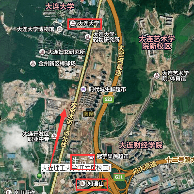

离学院很近的知语山（从生活区的大门出去左拐走一阵之后再左拐就到了）有两三个相对大一点的超市，东西要多一些，有一些用品的价格也要便宜一些。在学院里的超市买不到想要的东西可以来这边看一看，一般都可以找到。
除了超市，知语山街边水果摊的水果要比学校食堂的便宜很多。想买到便宜新鲜的水果一定要来这边看看。
稍微远一点的大连大学附近有一个金凯龙商场，从生活区北门出来，在学院这一侧坐五路车在终点站（大连大学站）下车之后就可以看见，里面除了平时的生活用品，体育课要用到的球拍和球、绘画用到的笔和纸等等，都可以在里面买到。这里的文具还有其他一些学习用品要比上面的两个地方的超市多很多，比较推荐到这里来买。

黎明苑超市，知语山，大连大学。开学初的用品在这三个地方就可以搞定啦。